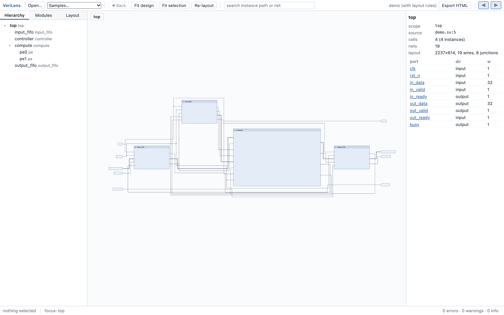
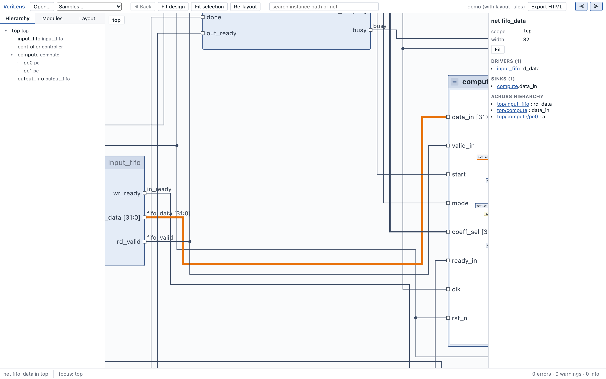
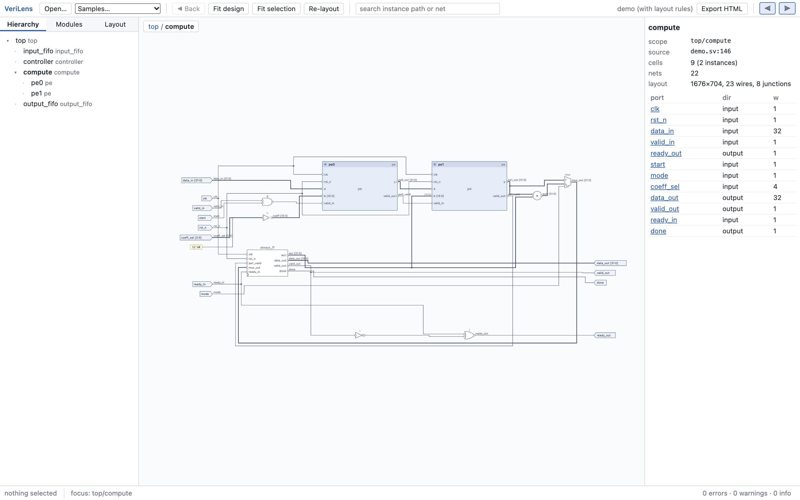
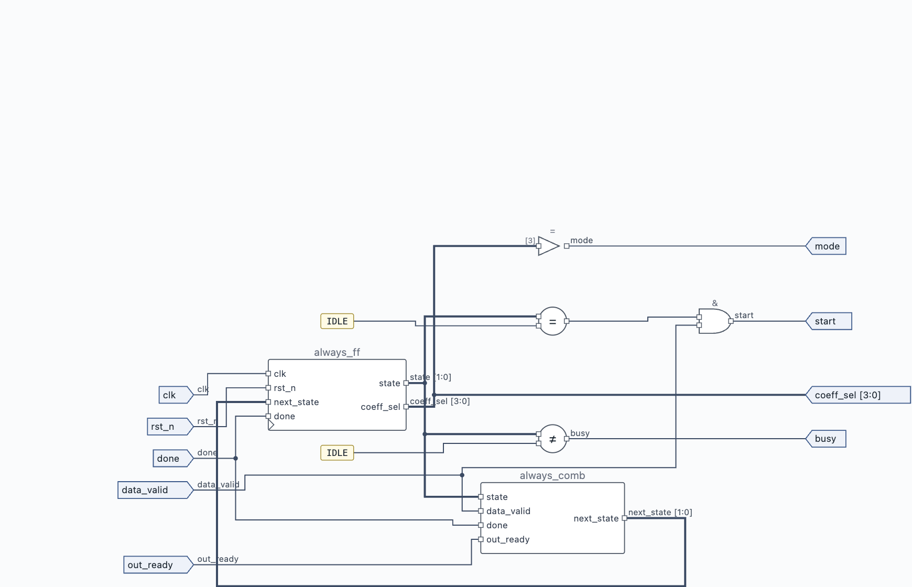
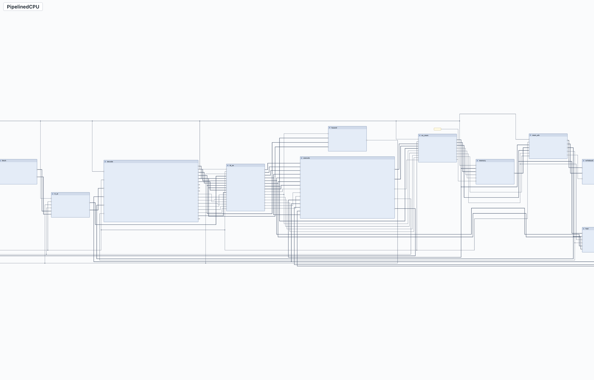
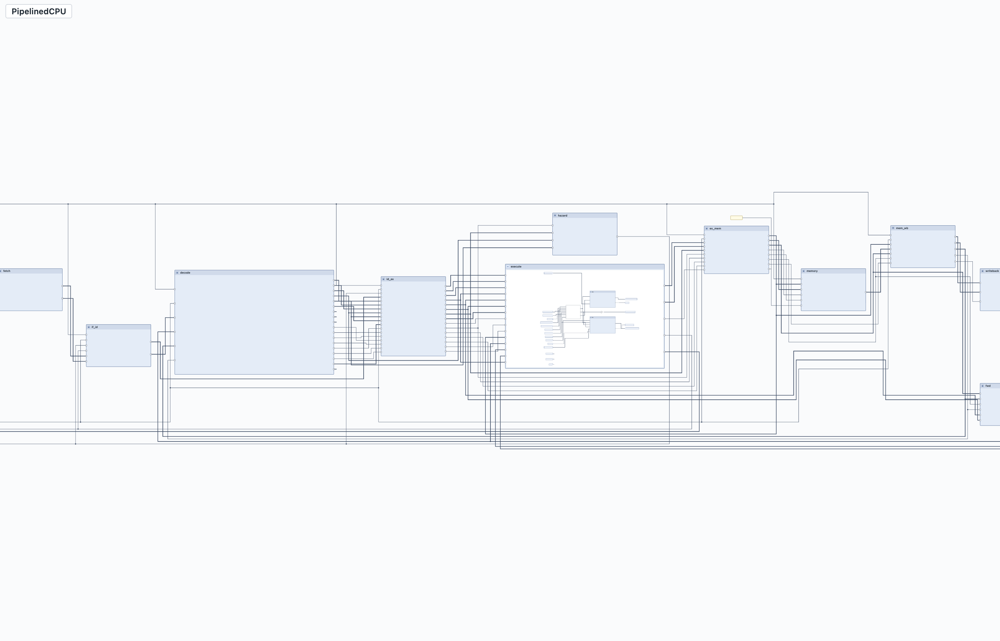

Examples
Two designs ship with the repository: a small streaming accelerator used by the tests and the docs, and a five-stage RISC-V pipeline from the core test suite.
Demo: streaming accelerator
Source: packages/web/samples/demo/demo.sv. A top with an input FIFO, a controller, a compute block (two instances of a processing-element module, an accumulator, a mux, an adder) and an output FIFO. It has buses, fanout (clock and reset), feedback (ready/valid back-pressure and the accumulator loop), constants and a struct-free, parser-friendly style.
Open it: automatic layout · with layout rules · with the conflicting rule file

demo.layout.yaml: datapath on one row with fixed gaps, controller above compute, a 640×420 frame for compute.
compute expanded in place; the fifo_data net is selected and the highlight continues into data_in inside the frame.
compute: the two PEs, the adder and mux, the always_ff register block, and feedback lanes below.
always_comb next-state block and an always_ff state register, with the 2-bit state bus drawn thicker.PipelinedCPU: a five-stage RISC-V pipeline
Source: core/tests/examples/PipelinedCPU.sv and the nineteen modules it instantiates: the five stages, four pipeline registers, hazard detection, forwarding, and the ALU, register file, immediate extender, control unit, branch unit, memories and load/store unit inside the stages. -t PipelinedCPU picks the top module, and PipelinedCPU.layout.yaml next to it pins the stage order left to right, keeps the stages on one row with the pipeline registers between them, places hazard detection above decode and forwarding below execute, and gives the two biggest stages a readable frame.
cd core/tests/examples
../../../verilens PipelinedCPU.sv FetchStage.sv DecodeStage.sv ExecuteStage.sv MemoryStage.sv WritebackStage.sv \
PipelineReg_IF_ID.sv PipelineReg_ID_EX.sv PipelineReg_EX_MEM.sv PipelineReg_MEM_WB.sv HazardDetect.sv \
ForwardingUnit.sv Alu.sv RegFile.sv ImmExtend.sv ControlUnit.sv BranchUnit.sv InstrMemory.sv DataMemory.sv \
LoadStoreUnit.sv -t PipelinedCPU -l PipelinedCPU.layout.yamlTwenty files, twenty modules, every instance resolved. Open the generated page ↗

fetch, decode, execute, memory and writeback left to right with the pipeline registers between them, hazard detection above, forwarding below.
execute expanded in its 640×420 frame; the surrounding boxes have not moved.Things worth clicking: the stall net from hazard detection back to fetch and the IF/ID register (a feedback route), the two forwarding selects into execute, and the writeback data returning to the register file inside decode.
Writing your own layout file
Start from automatic layout, open the Layout tab, and add rules one at a time. Required rules are for things that must hold (stage order, a block that must sit left of another); preferred rules are for taste (rows, something above something else). The DSL page has the full semantics and the demo rule file; core/tests/examples/PipelinedCPU.layout.yaml is the larger example.